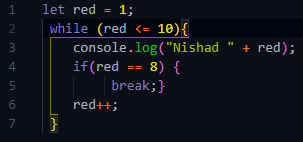
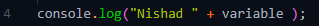
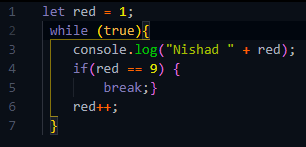
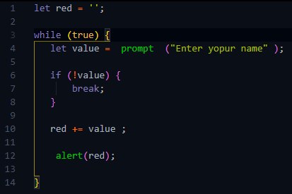
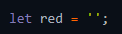

কোন একটা loop থেকে নির্দিষ্ট একটা condition আসার পরে সে loop থেকে বের হয়ে আসার কাজই করা হয় এই break statement এর
সাহায্যে ।
যেমনঃ-

এখানে condition অনুযায়ী loop টা ততক্ষন চলার কথা যতক্ষণ পর্যন্ত
red এর মান 10 এর বেশি হয় ।
কিন্তু এখানে যেহেতু if এর সাহায্যে
break ,, statement টা দেওয়া হয়েছে
সেহেতু এখানে if এর condition টা true হলেই if তার body রান করে দিবে ,
এবং loop টা এখানেই break হয়ে যাবে ।
ফলে js loop টা থেকে বের হয়ে যাবে ।
break ,, statement টা 2 ভাবে ব্যেবহার করা যায় ।
যেমন মনে করি loop ,, body তে এই 3 টা আলাদা আলাদা কাজের 3 টা statement আছে ।
 1
2
3
এখানে
1 নাম্বার লাইনটার কাজ হচ্ছে console এ কিছু print করা ।
2 নাম্বার লাইনটার কাজ হচ্ছে তার condition অনুযায়ী তার body তে থাকা statement গুলুকে run করা ।
আর
3 নাম্বার লাইনটার কাজ হচ্ছে কোন variable এর সাথে loop এর iteration প্রতি 1 করে যোগ করা ।
js যেহেতু উপর থেকে line by line নিচের দিকে পড়তে পড়তে আসে সেহেতু loop তার body তে যে statement টা আগে ব্যেবহার করা হবে সেটা আগে execute হয়ে সে কাজ টা আগে হবে ।
তো এখন মুল কথা হচ্ছে
যদি আমরা break statement টা console এর উপরে ব্যেবহার করি তবে তবে console টা 9 বার run হবে না কারন এক্ষেত্রে js ,, loop ,, body তে আগে break এর statement টা দেখতে পাবে এবং variable টা increment হতে হতে যখন তার মধ্যে 9 store হবে তখন break এর if ,, statement টা true হয়ে যাবে এবং js ,, loop টা থেকে বের হয়ে যাবে ।
যেহেতু break এর জন্য js তখনি loop থেকে বের হয়ে যায় তাই ঐ break ,, statement এর পরে loop body তে যা বাকি থকবে সেগুলু আর কিছুই run হবে না ।
আর যদি break ,, statement টা console এর পরে ব্যেবহার করা হয় তবে আগে console run হবে তারপর js , break ,, statement টা execute করবে ।
কোন কোন loop এমন থাকে যে তা শুরু হয়
infinite ,, loop হিসেবে
( কারন সে loop টার condition হিসেবে থাকে শুধু true )
কিন্তু সে loop টা যেন একটা পর্যায় গিয়ে থেমে যায় সে ব্যেবস্থা করতে পারি ।
তখন break ,, statement টা loop ,, body র ভেতরে দিতে পারি ।
ex:-

এখানে console.log টা মাত্র 9 বার'ই রান হবে
কারন এটা একটা infinite ,, loop হিসেবে নিজের কাজ শুরু করলেও js যখন loop টার 6 নাম্বার লাইনের increment ,, statement টা execute করবে তখন সে প্রতি iteration এ red এর সাথে 1 করে যোগ করতে থাকবে ।
এভাবে 1 করে যোগ করতে করতে এক পর্যায় গিয়ে red এর মধ্যে যখন 9 store হয়ে যাবে
তখন js ,, loop টা থেকে বের হয়ে যাবে ।
কখনো কখনো এমন করতে হয় যে ইউজার কোন prompt এ input নিবো ।
তারপর সে যতবার যা ডাটা দিবে তা ঐ আগের valueর সাথে যুক্ত করতে হবে ।
আর যদি কোন value না দিয়ে ইউজার prompt টা escape করে যায় তখনি prompt টা শেষ করতে হবে ।
তখন
ex:-

এই কাজ করতে হল ঃ-
১.
প্রথমে যেকোনো একটা empty string ,, variable নিতে হবে ।
২.
তারপর যেহেতু এখানে ইউজার যতবার ডাটা দিতে থাকবে ততবার prompt টা ততবারই শো করবে এবং একটা variable এ ডাটা বার বার store করতে থাকবে সেহেতু এখানে একই কাজ বার বার করা হয়েছে তাই এখানে একটা loop নিতে হবে ।
৩.
ইউজার থেকে ডাটা নেয়ার জন্য একটা prompt নিলাম ।
৪.
প্রয়োজন অনুযায়ী সঠিক অবস্থানে break statement নিলাম ।
যার কাজ হচ্ছে ইউজার যদি value নামের prompt টায় কোন value না দিয়ে ok করে বা cancel করে দেয় তবে if statement এর condition অনুযায়ী js ,, loop থেকে বের হয়ে যাবে ।
{(!value)= not value}
অর্থাৎ value তে কোন data আসলে সেটা true আর true ,, not operator এর সাথে execute হয়ে false হয়ে যাবে তাই যতক্ষণ ইউজার prompt এ ডাটা দিবে ততক্ষণ if break statement টা false হবে ।
৫.
এখানে 10 নাম্বার লাইনে
একটা += (plus equal) statement নিলাম ।
এটার কাজ হচ্ছে (+ addition) এর জন্য,
value নামের prompt এর মধ্যে store হওয়া ডাটা red নামের variable এর সাথে যোগ হয়ে (= assignment ) এর জন্য red নামের variable এ store হয়ে থাকবে ।
৬.
এখানে 11 নাম্বার লাইনে
alert এর সাহায্যে prompt থেকে এক বা একাদিক বার ডাটা নিয়ে সেটা একটা variable এ store করা হয়েছে কিনা সেটা পরিক্ষা করে দেখার কাজ করা হয়েছে ।
এখানে প্রথমে 1 নাম্বার লাইনে যে variable নেয়া হয়েছে সেটা অবশ্যই loop এর বাইরে declare এবং empty string এর সাথে assignment করে নিতে হবে ।
কারন যদি loop এর ভেতরে variable টা নি তবে loop এর প্রতিটা iteration এ variable টা reset হয়ে যাবে কারন এখানে যেহেতু  variable এর মধ্যে empty string ,, assignment করা হয়েছে ।
তাই js ,, loop এর মধ্যে এটাকে execute করা মানে এটার মধ্যে পুনরায় empty string ,, store করা ।